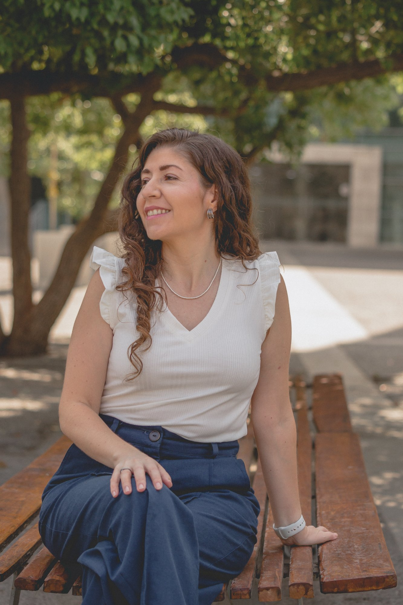

Un espacio breve para trabajar necesidades, límites y el rol de los adultos en familias ensambladas. No como teoría, sino para mirar lo que hoy no está siendo dicho y empezar a ordenarlo.
Quiero inscribirmePrograma creado por Nelly Huerta — Psicóloga Clínica, terapeuta familiar y parte de una familia ensamblada
"Inconscientemente, asumimos que solo existe una sola forma de hacer pareja o familia. Y olvidamos que nosotros somos los protagonistas de las relaciones que vamos construyendo."
"No basta con la buena intención, ni siquiera con amor. La clave ha sido algo menos romántico y más exigente: que todos los integrantes, pero más aún los adultos, trabajen en reconocer sus necesidades y desde ahí sostengan límites que ayuden a ordenar el sistema."— Nelly Huerta
La mayor característica de esta forma de ser familia es que conviven adultos, niños o adolescentes con valores, reglas y formas de entender la vida que no nacieron juntas.
Eso en sí no es negativo ni positivo, pero puede pasar que lo que para una persona es obvio, para la otra no lo sea. Y por tanto, va a tomar un tiempo conocerse para ir construyendo criterios comunes.
En ese tiempo, hay prácticas que he visto repetirse en familias de este tipo y que no siempre ayudan:
Más que aprender nuevas herramientas, muchas veces el trabajo es otro: dejar de evitar las conversaciones que podrían ordenar la convivencia, y empezar a asumir el rol adulto que eso requiere.
No es que no veamos que algo nos incomoda o no nos hace bien. El problema es manifestarlo cuando aparece. Estos son los obstáculos más comunes:
Sentir que al poner un límite estás siendo egoísta o dañando a quienes amas. La culpa paraliza y nos devuelve a patrones que no funcionan.
Evitar decir lo que sientes para no "arruinar" lo que han construido. Pero lo que no se dice se acumula y explota después.
Propios o de la pareja. El miedo a que los niños "elijan" al otro lado o rechacen la nueva estructura familiar.
Pensar que una conversación honesta puede destruir lo que se ha logrado. Entonces volvemos a lo conocido: adaptarnos un poco más.
Creer que lo que sentimos "no debería" ser así. Que deberíamos poder manejarlo solos o que es una exageración.
Convencernos de que podemos esperar un mejor momento, adaptarnos un poco más. Pero ese momento nunca llega.
Estás en una familia ensamblada y tienes conversaciones pendientes pero te está costando abordarlas.
Sientes que caminas en un campo minado — cada decisión genera conflicto con tu pareja, los hijos o los ex.
Has caído en el patrón de ceder para no generar conflicto, postergar conversaciones o quejarte sin hacer peticiones claras.
No sabes cómo poner límites a los hijos de tu pareja sin parecer "la mala/el malo de la película".
La relación con las ex parejas genera interferencias constantes en tu nuevo hogar.
Sientes culpa por priorizar tu relación de pareja frente a tus hijos.
Idealizaste una familia que no existe y la realidad te golpeó: integrar familias es mucho más complejo de lo que pensabas.
Quieres un espacio para mirar lo que hoy no se está diciendo y empezar a ordenarlo — con acompañamiento profesional.
"Cuando enfrentamos algo nuevo, tendemos a llenar lo desconocido con experiencias de amigos, lo que vivimos en nuestra propia familia, o incluso estereotipos de películas y series. Olvidamos que nosotros somos los protagonistas de las relaciones que vamos construyendo."— Nelly Huerta
No es un proceso rápido ni especialmente cómodo, pero es lo que permite ir transformando la familia ensamblada en una familia que va tomando acuerdos que son únicos y especiales.
No existe una única receta. Hay familias donde todos conviven juntos y otras donde cierta distancia es lo que funciona. Ninguna es más válida que otra.
Identificar lo que te incomoda y atreverte a nombrarlo. El primer paso es dejar de convencerte de que "no es tan grave".
Límites que ayuden a ordenar el sistema. No como castigo ni como muro, sino como estructura que protege a todos.
Asumir el rol que la familia necesita. Las relaciones se ordenan cuando los adultos logran ocupar ese lugar con claridad.
Dejar de postergar para "cuando sea el momento adecuado". Aprender a hacer peticiones claras en lugar de quejarse.
Co-parentalidad funcional: comunicación, límites y protocolos que protegen el desarrollo de los niños y adolescentes.
Proteger el desarrollo de niños y adolescentes que, sin haberlo decidido, se ven en una nueva familia. Eso siempre genera un impacto importante.
Criterios comunes, rituales y narrativas que transformen tu familia ensamblada en una familia con acuerdos únicos y especiales.
Reconocer tus necesidades y atreverte a expresarlas sin culpa ni vergüenza
Sostener límites que ordenen la convivencia sin destruir los vínculos
Tener las conversaciones que estás postergando, con herramientas concretas
Asumir el rol adulto que tu familia necesita con claridad y seguridad
Proteger el desarrollo de los niños y adolescentes en la nueva estructura
Establecer una co-parentalidad funcional que proteja a los hijos
Dejar de comparar tu familia con la familia nuclear y validar tu propia forma
Construir acuerdos únicos que transformen tu familia en un espacio funcional y con futuro

Soy psicóloga clínica, terapeuta familiar y — lo más importante para este programa — soy parte de una familia ensamblada. Conozco los desafíos desde adentro.
Una de mis máximas motivaciones para acompañar parejas y familias es proteger el desarrollo de niños y adolescentes, que sin haberlo decidido se ven en una nueva familia y eso siempre va a generar un impacto importante en sus vidas.
Acompaño personas que están en búsqueda constante de crecer y desarrollarse, que desean construir relaciones personales saludables y enriquecedoras, para vivir con mayor bienestar y consciencia.
Todas las sesiones quedan grabadas y disponibles en la plataforma. Además, puedes enviar tus preguntas por escrito y las responderé en la sesión siguiente.
El programa dura 8 semanas con sesiones semanales. Tendrás acceso a todo el material grabado y recursos descargables por 4 meses desde el inicio.
Idealmente sí, ya que el programa está diseñado para que ambos miembros de la pareja trabajen en conjunto. Sin embargo, si solo uno puede participar, igualmente obtendrás herramientas valiosas que puedes implementar.
No. Con una sola inscripción ambos pueden acceder desde el mismo dispositivo y participar juntos de las sesiones.
El programa es un proceso educativo-terapéutico grupal con contenido estructurado específico para familias ensambladas. No reemplaza la terapia individual, pero entrega herramientas concretas que muchas veces la terapia no aborda directamente. Muchos participantes lo combinan con terapia de pareja.
Absolutamente. De hecho, es ideal prepararse ANTES de la convivencia. Las parejas que anticipan los desafíos tienen significativamente mejores resultados que las que improvisan.
Sí, todas las sesiones son online en vivo vía Zoom. Esto permite que participen parejas de cualquier lugar. Las sesiones quedan grabadas para quienes no puedan asistir en horario.
Sí, al completar el programa se entrega un certificado de participación. Varios profesionales de la salud mental lo toman para su formación continua.
No existe una única receta. Pero sí existe un espacio para mirar lo que hoy no está siendo dicho y empezar a ordenarlo. Cupos limitados para asegurar un acompañamiento cercano.
Sí, quiero inscribirme